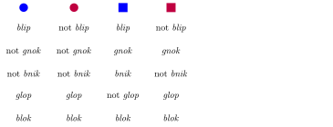

The problem of overgeneration
In our discussion of \(n\)-gram models, we were largely concerned with specifying grammars for specific phenomena. Among other things, you wrote grammars for word-final devoicing, intervocalic voicing, and penultimate stress. This shows that many phenomena can be accounted for by very simple models. But there is a problem: the opposite also holds. This whole unit is dedicated to explaining what this means, why it is a problem, and how it can be addressed in at least some domains. The first two points are handled in this unit, whereas the latter is spread out over the remainder.
Overgeneration and undergeneration
There is a major problem with \(n\)-gram models, in fact every computational model. All these models take for granted that there is a fixed alphabet, and the elements of this alphabet are treated as unanalyzable atoms without any additional properties. As far as an \(n\)-gram grammar is concerned, the sounds s and f, for instance, do not differ in any relevant sense from z and v. So just like one can write a grammar for intervocalic voicing, one can also write one for intervocalic devoicing. Remember, intervocalic voicing means that voiceless sounds like s and f may not appear between vowels. Intervocalic devoicing would be the opposite: voiced sounds like z and v may not appear between vowels. Intervocalic voicing is a very natural and common process, whereas intervocalic devoicing does not seem to exist in even a single language. Apparently, language simply does not work like that.
Write a negative trigram grammar for intervocalic devoicing, assuming that the alphabet consists only of a, o, s, z, and l. Remember that s is voiceless and z is voiced. Also, l is not subject to intervocalic voicing.
This is just the tip of the iceberg. With \(n\)-gram grammars, we can express very unnatural conditions that do not seem to be attested in any language, and we can do that even if \(n\) is very small.
Assuming the same alphabet as in the previous exercise, write a bigram grammar (it may be positive or negative) that requires every word to start with a and end with f.
Assuming the same alphabet as before, write a trigram grammar (it may be positive or negative) for “penultimate f”: if a word has at least two symbols, then the last but one symbol must be f.
Suppose that English only contains the words the, old, man, woman, sleep, sleeps, snore, and snores. Assume furthermore that the English subject verb agreement system works as follows: if the subject does not contain an adjective (like old), then use the inflected verb form; otherwise, use the base form. So we would get The old man snore but The man snores. Write a trigram grammar that captures this unnatural condition.
These exercises show that our models overgenerate from a typological perspective. Yes, they capture many of the patterns that occur in natural languages, and that’s a good thing. But unfortunately they can also generate patterns that do not seem to exist in any language currently know to linguists. Now perhaps that’s just a coincidence. Maybe these patterns are possible in principle and modern linguistics has just been very unlucky to develop in a time period where no language spoken by humans currently exhibits such patterns. But this seems very unlikely, and it’s not a very insightful stance to take. After all, it might also be true that there are parts of the universe where the laws of physics do not apply, but that does not mean that physicists should assume that “anything goes” in the universe. And frankly, we do not need to even open that philosophical can of worms, some of the constraints that we can expressive with \(n\)-gram grammars are just too absurd to ever show up in a natural language. Bottom line: \(n\)-gram models do not provide a perfect fit for language, they have an overgeneration problem because they can do things that languages simply do not do.
Assume that our alphabet consists of a, o, s, z, and l, as before. Write a bigram grammar (it may be positive or negative) that requires every word to consist of exactly 1 symbol. Explain why it is highly unlikely that any natural language would have such a constraint on words.
Overgeneration is a better position to be in than undergeneration. Undergeneration refers to cases where a formalism cannot capture all relevant phenomena. For example, we saw that \(n\)-gram grammars without tiers cannot handle culminativity, long-distance sibilant harmony, or vowel harmony with neutral vowels. We had to add tiers in order to resolve this case of undergeneration. When we did that, we did not worry too much about whether this would bring about massive overgeneration, and that is because overgeneration isn’t nearly as bad as undergeneration. It’s better to do too much than too little. The worst-case scenario, which is surprisingly common, is that of a formalism that suffers from both shortcomings: not all phenomena can be handled, and the formalism can also express unnatural patterns.
Ideally, a formalism would provide a perfect fit for natural language, which means that it neither overgenerates nor undergenerates. No such formalism exists at this point, and we may never find such a formalism. Of course there has been plenty of attempts to get us there, including in mathematical and computational linguistics. One noteworthy thing is that those attempts have largely tried to fix the undergeneration problem, providing us with increasingly expressive models. Overgeneration, on the other hand, has received a lot less attention.
This makes sense to some extent: if your primary goal is to have an expressive tool for describing linguistic phenomena, then it isn’t much of a problem that this tool allows you to do more than what you need for the job. You wouldn’t denigrate a hammer or a saw because it allows you to build more than just bird feeders. You wouldn’t complain that your car doesn’t just get you around, no, it also provides storage for your priceless Pokemon trading card collection. And while birds might have originally developed wings for better temperature regulation, it would be really weird if they didn’t use them for flight once the physics allowed for it. As a rule of thumb, better than necessary is a good thing.
But language is different. Linguists don’t just want a descriptive tool, they want a formalism that approximates the mental faculties that humans use for language. If our formalism predicts that pattern \(P\) is possible, yet we do not find \(P\) anywhere, that indicates that our formalism is not a good approximation of what the human mind is actually doing with language. Even if you do not care about these lofty pie-in-the-sky goals, there are also very practical concerns. The larger the range of phenomena that can be described by a formalism, the harder it is to design a learning algorithm for said formalism. The intuition here is that you’ll have a much easier time finding the right answer among, say, 100 options rather than 1000. A learning algorithm that assumes that a natural language could display an unnatural process like intervocalic devoicing needs more data to rule out this hypothesis. Data, in particular linguistic data, still is hard to come by — if you think otherwise, I wish you the best of luck building a comprehensive training corpus for Malagasy (an Austronesian language, spoken in Madagascar), Dinka (Nilotic, South Sudan), or Ewe (classification unclear, possibly Niger-Congo, spoken in West Africa). If you can avoid overgeneration, then you should avoid overgeneration.
Universals
The whole discussion of overgeneration and undergeneration is about finding a model with the right fit for natural language — not too weak, not too powerful. And that, in turn, is a discussion of linguistic invariants, i.e. invariable properties that are exhibited by all natural languages. Linguists use the term universals to refer to such invariable properties. There definitely are some universals. Some linguists have argued against universals, but they usually take umbrage with the specific universals that have been proposed. There is also disagreement on whether universals are part of a speaker’s mental grammar or arise from some other factors, e.g. general cognitive biases about how humans conceptualize the world (we will see some of that in a bit). But either way there is no doubt that there are universals in the sense that natural languages do not vary in all logically conceivable ways.
No known language enforces any of the following conditions:
- The further to the right a syllable occurs in a word, the more consonants it must have.
- Any sequence of sounds is a possible word as long as it contains at least as many vowels as consonants.
- When we sort the words of a language by their length, we get the Fibonacci series: 1, 1, 2, 3, 5, 8, 13, …
- The first word in a sentence must rhyme with the last word in a sentence.
- Every sentence must have an even number of words.
- To negate a sentence, utter it backwards.
- Adjectives that start with a vowel go before the noun, adjectives that start with a consonant go after the noun.
- Relative clauses follow the noun they modify if it is the subject, but otherwise precede the noun.
Apparently languages can only enforce constraints of a specific kind, and the examples above do not fit the bill.
For each constraint above, give a concrete example from English that violates it.
Can you think of a constraint that you are fairly certain does not arise in any natural language?
Hint: Mathematical concepts like prime numbers are very fruitful for this.
The idea of universals is very powerful: if we can identify a reliable list of universals, then we know what constraints, dependencies, and the overall patterns in natural languages may look like. That would give us a very good idea of what our models have to be capable of and what is superfluous, and thus we could design more restrictive and efficient models that can be learned from less data. Unfortunately we do not have conclusive list of universals yet — linguists keep discovering new phenomena, and new data might invalidate our current assumptions about what is universal. This is one of the reasons why computer models still do much worse than humans in several respects. Presumably, the human mind somehow comes with the full list of universals, and that makes language a lot easier. Thanks to universals, children learn their native language effortlessly with relatively little input. As mentioned above, these universals need not be language specific, they could more general universals that are connected to how humans detect patterns, what generalizations humans consider simple and intuitive, or that some classes are more natural than others. But something very specific must be in place that helps children figure out the rules of their native language from very limited data.
Most people will continue the sequence 1, 2, 3, …, with 4, 5, 6, and so on. But there are infinitely many ways to continue this sequence (actually, more than infinitely many, as we’ll learn in a later chapter). A few examples:
- 5, 8, 13, … (each number is the sum of the preceding two numbers, as in the Fibonacci series)
- 7, 8, 27, … (take the two preceding numbers, multiply the first by 5, then subtract the second number)
- 1, 2, 3, … (keep looping the first three numbers)
- 2, 1, 2, 3, 2 … (keep oscillating between 1 and 3)
- 123, 231, 312, … (concatenate the first digit of the three preceding numbers)
- 3, 3, 3, 3, 3, … (no change after the third number)
Something, who knows what, makes humans believe that these are all less natural continuations than 4, 5, 6, …
For better or worse (very often for much worse), humans like to classify fellow humans by various traits: their language, gender, skin color, sexuality, birth place, wealth, whether they’re left-handed or right-handed, their Zodiac sign, and so on. And we often combine these, talking for instance about the female Sagittarius, or American people of color, or rich gay men. Now we could come up with many more types of classes.
- The class of humans who are female or rich.
- The class of humans who are either left-handed or Pisces, but not both.
- The class of humans who are left-handed or Pisces, and not from America.
Those are all weird, though. That’s just not how we combine existing classes to pick out specific groups of people.
You might think the previous example is contrived because there’s no utility to those new classes. So let’s consider a case where utility doesn’t even factor into things. Below is a chart showing some made-up English words and what kind of objects this word can refer to. For example, the first row tells us that blue circles and blue squares are blip, whereas red circles and red squares are not blip. Try to infer the meaning of those words from those examples.

Now consider this expanded chart which also contains information about brown objects. Is your original hypothesis still correct? Can you make more sense of the words now, or did things just get really confusing?

Once you’re done pondering those questions, go to the end of the unit for a definition of each word. Do they strike you as particularly natural? If not, what is it about them that makes them weird?
The philosopher Willard Van Orman Quine (what a name!) pointed out this fundamental conundrum of human cognition with his Gavagai thought experiment. Suppose you are on a remote island, trying to learn the language of the locals. A bunny emerges from underneath a bush. A local points at the bunny and says gavagai. What does gavagai mean?
Almost everybody will tell you it must mean bunny or rabbit, but why should that be the case? There’s so many other things it could mean:
- animal
- Look there!
- Watch out!
- How cute!
- There’s our dinner!
- That’s my favorite bush.
- Pull my finger!
Again we see that humans have some universal, in-built biases in how we interpret data and the world around us.
Everything thus points towards humans having innate biases that allow them to learn very quickly and robustly from very little data. Current machine learning models, on the other hand, have no knowledge of universals and thus need huge amounts of data to weed out lots of crud that is logically conceivable but nonetheless never occurs in any natural language. Quite simply, children will never try to do anything like intervocalic devoicing because that would violate a linguistic universal. The child isn’t consciously aware of this, it is just following some innate cognitive biases, but the end result is the same. By contrast, a computer without linguistic universals approaches the learning problem with a very open mind, too open, and hence needs to learn purely from the data that the language does not have intervocalic devoicing.
Therefore, universals are very important to learning, whether it is done by humans or computers. And a model that overgenerates is missing important universals that could help with learning. More specifically, linguists distinguish two types of universals:
Formal universals
These identify abstract properties of the “grammar machine”. For example, if all linguistic phenomena could be described by \(n\)-gram grammars (they can’t, unfortunately), that would be a formal universal of language.Substantive universals
These identify properties of the “building material” used by the grammar machine. For instance, consonants and vowels aren’t just arbitrary symbols but very different kinds of sounds with very different roles in language. A substantive universal might help explain, say, why intervocalic voicing is common and intervocalic devoicing unattested even though both look the same from a formal perspective and both could be produced by the grammar machine.
We might expect that universals are just a random collection of properties, but there is a lot of systematicity to them. In fact, there seem to be several mathematical properties that play a key role in language. The next unit will flesh out this idea and in doing so, it will also sharpen our understanding of formal VS substantive universals.
Oh, and in case you were wondering:
- blip: not red
- gnok: brown or rectangular
- bnik: both blip and gnok
- glop: if both bnik and not brown, then not rectangular
- blok: bnik or glop, but not both
Recap
- Formalisms may overgenerate or undergenerate.
- Undergeneration is worse because it means there are aspects of language that we cannot model with this formalism.
- But overgeneration is also bad because it means that we are missing linguistic universals that could make learning easier.